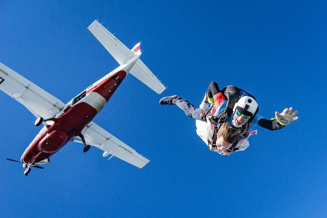
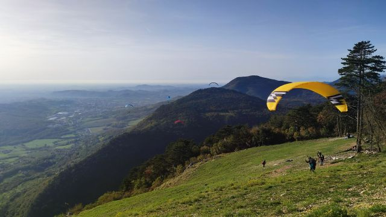

Láttam, ahogy az ejtőernyős leugrik a hegyről a paplanernyőjével,
aztán az egyik ház kertjébe zuhant le, de nem lett semmi baja...
Hogyan lehetek siklóernyős?
Ezt a kérdést én is felettem 2004-ben. Akkor még nem volt ennyire kiforrott útja a siklóernyőssé válásnak.
Ma, ha valaki siklóernyőzni szeretne, akkor egyszerűen felkeres egy siklóernyős klubot
a közelében, befizeti a
tandíjat, amiért klubonként eltérő színvonalon és szolgáltatási minőséggel siklóernyős képzésben részesül. A
képzés többnyire a klub kölcsönfelszerelésével történik, amelynek bérleti díját tartalmazza a tanfolyami díj.
Ezek után elkezdi gyűjteni oktató felügyeletében a repült órákat és a startokat, magas startokat, majd leteszi
az első vizsgáját. Az úgynevezett "A" vizsga után még mindíg csak felügyelet mellett repülhet, de aztán a "B"
vizsga teljesítésével már önálló pilóta minősítés birtokában elvágják a köldökzsinórt és önállóan repülhet.
Amennyiben csőrlőzni szeretnél, akkor csőrlőzhető vizsgát kell tenned, amely körülbelül fél órás elméleti és
néhány alkalmas csőrlési gyakorlatból áll. A siklóernyős pilóta minősítéseit a startkönyvében és elektronikus
úton a siklóernyős szövetség felületén tartják nyilván.
A siklóernyős nem ejtőernyős.
Siklóernyőzés teljesen elkülönült sportág az ejtőernyőzéstől is, saját versenyszámokkal, saját rekordokkal,
eltérő tematikával, képzéssel és irányítással. Az ejtőernyőzés lényege az irányított szabadesés. A
siklóernyőzés ezzel szemben a repülés időtartamának és távolságának maximalizáslására törekszik.

A siklóernyős repülőeszköze a siklóernyő.
A siklóernyős ernyője a siklóernyő. Nem paplanernyő és nem ejtőernyő. A paplanernyő laikus körökben tévesen
használt fogalom az új típusú, nem körkupolás ejtőernyők megnevezésére. Az ejtőernyő ezen típusa
valójában helyesen légcellás ernyőként szerepel szakmai körökben. A siklóernyő ennek az ernyőtípusnak az
evolúciójaként alakult ki és ennek köszönhetően ragadt a köztudatban a siklóernyő megnevezésére is. A
siklóernyős körökben az ernyőt siklóernyőnek, ernyőnek vagy egyszerűen szárnynak, az angolban "wing"-nek
nevezzük.

A siklóernyős nem ugrik sehonnan, hanem startol.
A siklóernyős nem ugrik sehonnan, hanem startol. Az ejtőernyősök ugranak, repülőből, hőlégbalonból, speciális
magas objektumokból osszehajtott, ha úgy tetszik, elcsomagolt ernyővel. A siklóernyős ezzel szemben
szétterített ernyővel több-kevesebb nekifutás és szembeszél segítségével startol. A siklóernyős start másik
lehetséges változata az úgynevezett csőrlőzés, amikor egy megfeszített csőrlőről legördülő vagy visszacsévélt
kötél erejével
hízzák a siklóernyőst a magasba, majd a kötelet leoldják mikor elérte a megfelelő magasságot.
Előfordul, hogy a siklóernyős egy ház kertjében vagy focipályán ér
földet...
Előfordul, hogy a siklóernyős egy ház kertjében vagy focipályán ér
földet, de abban az esetben, ha nem sérül meg ezt nem
zuhanásnak, hanem vészleszállásnak hívjuk. Alapvetően a siklóernyősök kijelölt leszállópályán igyekeznek
leszállni de ahhoz, hogy ez sikerüljön szükséges némi gyakorlottság, másrészt az időjárás hirtelen változása
is előidézhet olyan helyzetet, amikor a pilótának nem marad más lehetősége, mint egy másik leszállásra
alkalmas, de nem szokványos
helyen landolni, vészleszállást végrehajtani. A harmadik ok a siklóernyőzés természetéből adódik. Amennyiben
ugyanis a pilóta távrepülést
hajt végre a repülés útvonala determinálja a leszállás helyét, illetve az csak kis mértékben tervezhető.
Siklóernyős távrepülés világrekordja
Tudtad, hogy ez a repülőeszköz pusztán a természetből, a környzeti energia felhasználásával képes több száz
kilóméter
megtételére? Igen, a siklóernyő mesterséges meghajtás nélküli leghosszabb megtett távja 2023-ban 609,9km. Nem
tévedés!
Több mint hatszáz kilóméter! A távrepülés rekordja 1990-ben még csak alig több mint hetvennégy kilóméter
volt,
de 1993-ban már 263 kilóméter. Ez egyben mutatja a siklóernyők forradalmi fejlődését de a siklóernyős
technikák, tudásanyag csiszolódását és bővülését is.